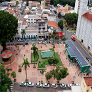
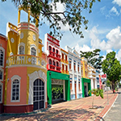
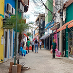

A cidade mais verde do Centro-Oeste
Revendo os amigos na Praça Alencastro
Como o próprio título diz, primeiramente, é um lugar onde as pessoas podem se deslocar para outros cantos da cidade através da recente construção da Estação Alencastro, também, sendo a região com diversas árvores, e, consequentemente muita sombra possibilitando que todas as pessoas podem passar um tempo conversando com seus amigos e conhecidos.
A Praça Alencastro é uma história para todos que vão a este lugar. Vejamos as recentes publicações no Instagram !
Vamos passear na Orla!
Está querendo relaxar neste fim de semana depois de um semana de trabalho? Se sim, vamos conhecer a Orla do Porto! Esse é um dos pontos turísticos de Cuiabá mais recente, você pode até tirar sua bike da garagem, um lugar tranquilo para andar de bicicleta, mas, lembre-se respeite os pedrestes. Será possível encontrar bons restaurantes, ótimo para família curtir o fim de semana.
Buscando mais fotos sobre o local clique aqui.
Um pouco mais sobre Cuiabá
A região de Cuiabá, é marcada por diversas histórias, não poderia ser diferente nas ruas do centro de Cuiabá, especialmente Rua 13 de Junho, esse nome relacionado a expulsão das tropas paraguaias em 1867. Um fato curioso dessa rua que normalmente as pessoas se referente como "Calçadão", devido grande trecho de lojas e comércios.
Deseja fazer algumas compras? Segura a localização do Google Maps !
Outros pontos turísticos na cidade...
- Parque Mãe Bonifácia
- Centro Histórico de Cuiabá
- Museu de Pré-história Casa Dom Aquino
- Igreja de Nossa Senhora do Rosário e São Benedito de Cuiabá